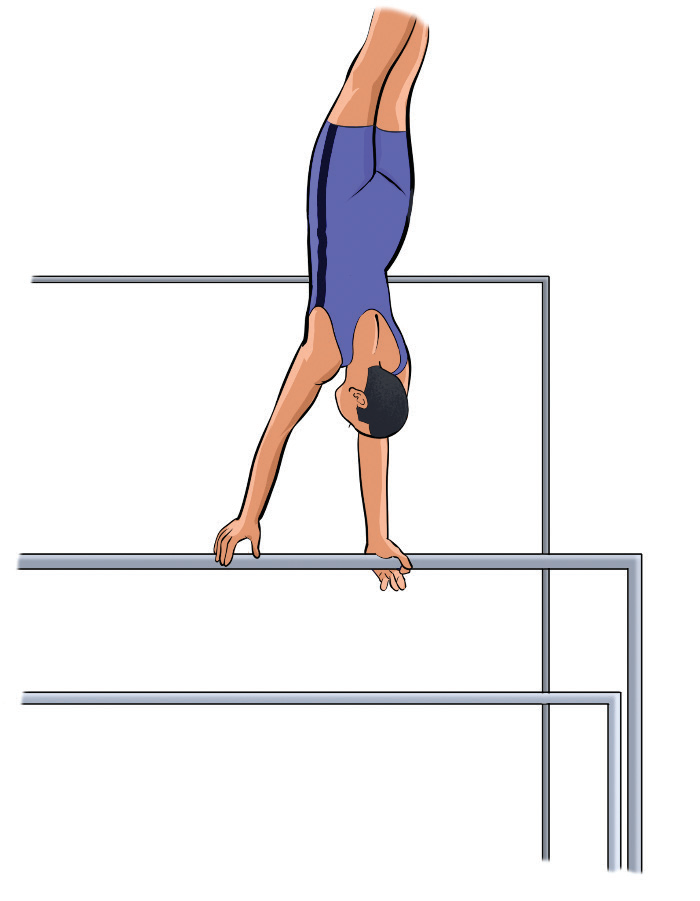

Activity 4.18
Search from internet and other sources on how to execute a jump to beam balance mount and practice it.
Uneven bars mounts
Mounting the uneven bars refers to how a gymnast gets onto the bars to begin their routine. The following steps will help you practice mounting on uneven bars:
- (i) Stand facing the low bar;
- (ii) Jump up and grip the bar, Figure 4.19;
- (iii) Extend legs into a glide swing;
- (iv) Pull feet to the bar and push into front support;
- (v) For high bar: jump and straddle legs to catch the bar in mid-air; and
- (vi) Swing forward into your routine.

Activity 4.19
Search from internet and other sources on how to execute a mounting on uneven bars and practice it repeatedly until you master the skill.